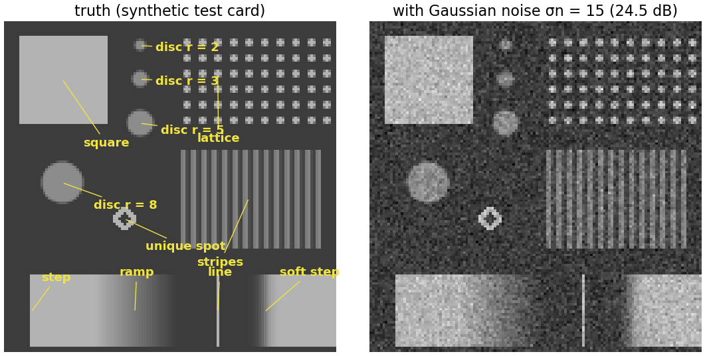
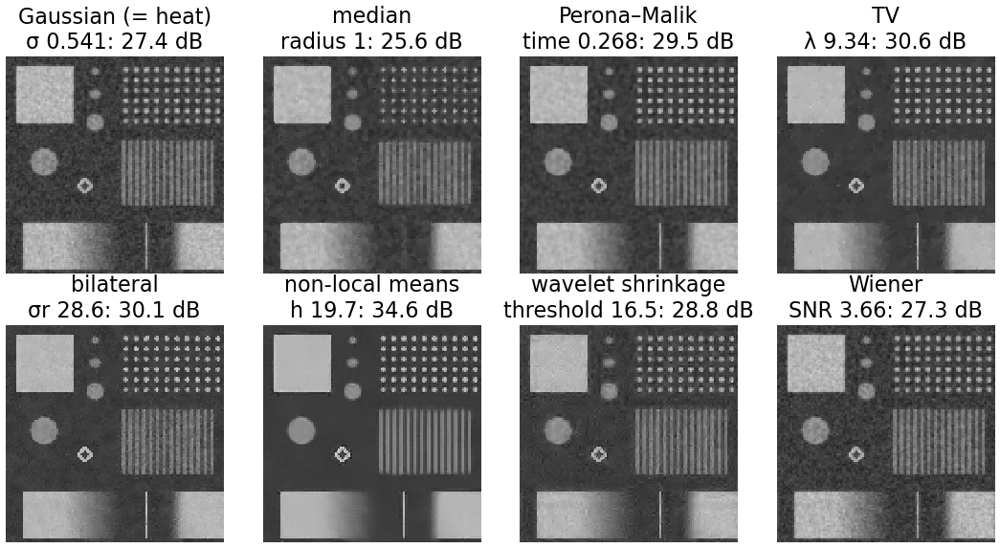
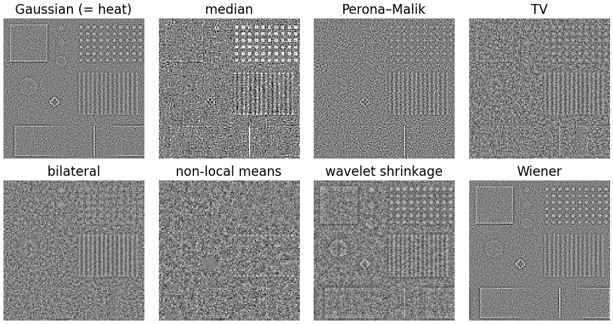
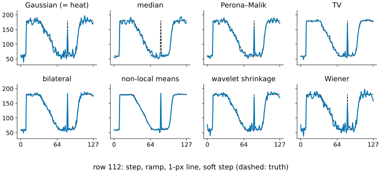
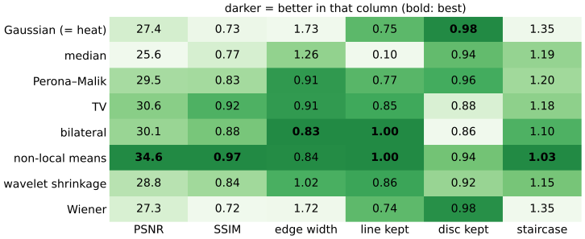
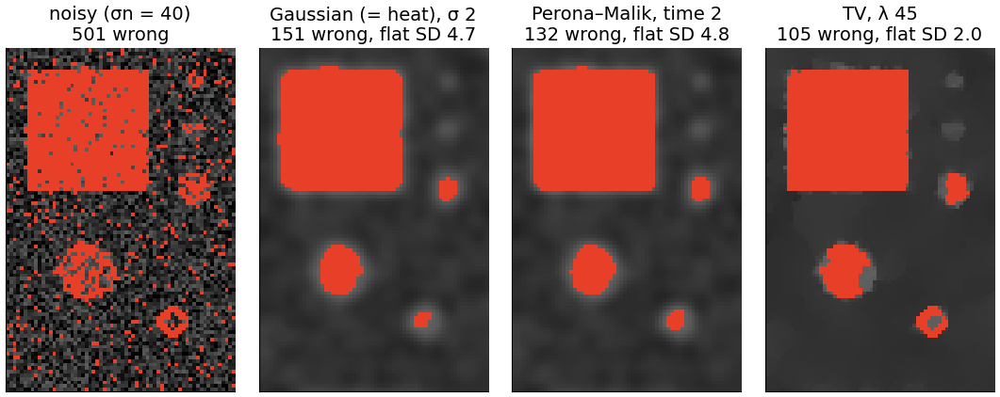

A closing comparison. Eight smoothers from this day and earlier ones, on one test card with known truth and the same noise:
Slides titled The math give the formulas and proofs; the ideas are complete without them.
A synthetic image with known truth, so that every result can be scored:
Gaussian noise σn = 15 (24.5 dB). Each method is set to its best PSNR for this noise.


Non-local means wins this card by a wide margin (34.6 dB): the card is full of repeats (lattice, stripes, long straight edges). On an image without repeats it has no advantage.
| method | believes | fails when |
|---|---|---|
| Gaussian (heat) | the image is smooth | there are edges and fine detail |
| median | outliers are rare; structures are wider than the window | lines and dots are thinner than the window |
| Perona–Malik | piecewise smooth, edges higher than K | edges are as weak as the noise; ramps (staircases) |
| TV | piecewise constant, short total edge length | smooth gradients, texture, small low-contrast objects |
| bilateral | nearby similar values belong together | the noise is as large as the edges |
| non-local means | the image repeats itself | unique details (only the pixel itself matches) |
| wavelet shrinkage | few large wavelet coefficients | textures with many medium coefficients |
| Wiener | a known power spectrum (here 1/f^2) | the image is not “average” (sharp, sparse structures) |
The method wins where its belief is true of the image, and fails where it is not.
Method noise = noisy − result (recall). Ideally it is pure noise, with no structure.


The 1-pixel line: kept fully by bilateral and NLM, at 74–87 % by Gaussian, Wiener, Perona–Malik, TV and wavelets, and removed (10 %) by the median.
No method wins every column. The Gaussian keeps the small disc best (it blurs very little at its best PSNR setting); the median loses the line; NLM wins the global scores.

Threshold at 120 after smoothing a very noisy card (σn = 40), left part (square and discs):
Edge-preserving smoothing gives cleaner masks than a Gaussian that leaves the same or more noise. The intensities are still measured on the raw image inside those masks.

| method | energy or rule | linear? | convex? | local? |
|---|---|---|---|---|
| Gaussian / heat | \tfrac12\|u - y\|^2 + \lambda\sum|\nabla u|^2 (one implicit step), or G_\sigma * y | yes | yes | yes |
| median | \arg\min_m\sum_{q \in W}|I_q - m| per window | no | yes | yes |
| Perona–Malik | descent on \sum\tfrac{K^2}2\ln(1 + |\nabla u|^2/K^2), stopped | no | no | yes |
| TV | \tfrac12\|u - y\|^2 + \lambda\sum|\nabla u| | no | yes | yes |
| bilateral | one reweighting step of \sum_q w^s_{pq}\rho(I_q - m), flattening ρ | no | no | yes |
| NLM | one heat step on the patch graph | no | (no energy) | no |
| wavelet shrinkage | \tfrac12\|c - Wy\|^2 + \lambda\|c\|_1 (soft threshold), W orthogonal | no | yes | in scale |
| Wiener | \min \mathbb E\|u - x\|^2 over linear filters, known spectra | yes | yes | no (global) |